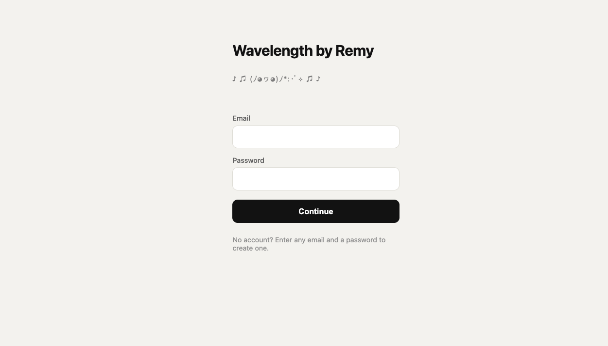
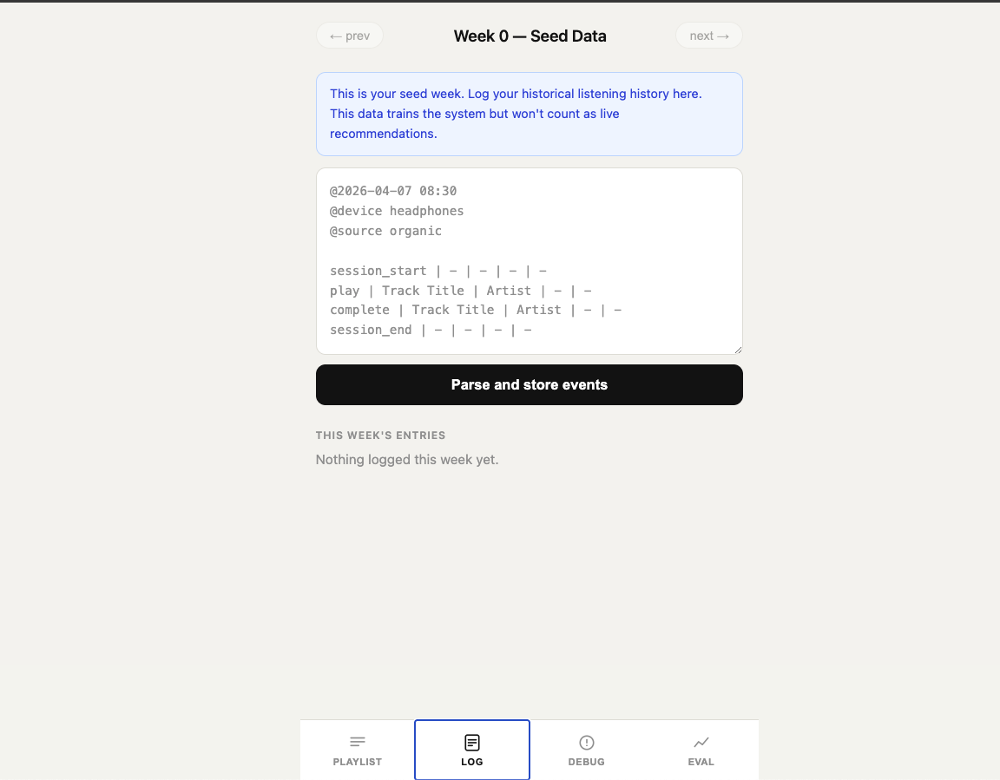
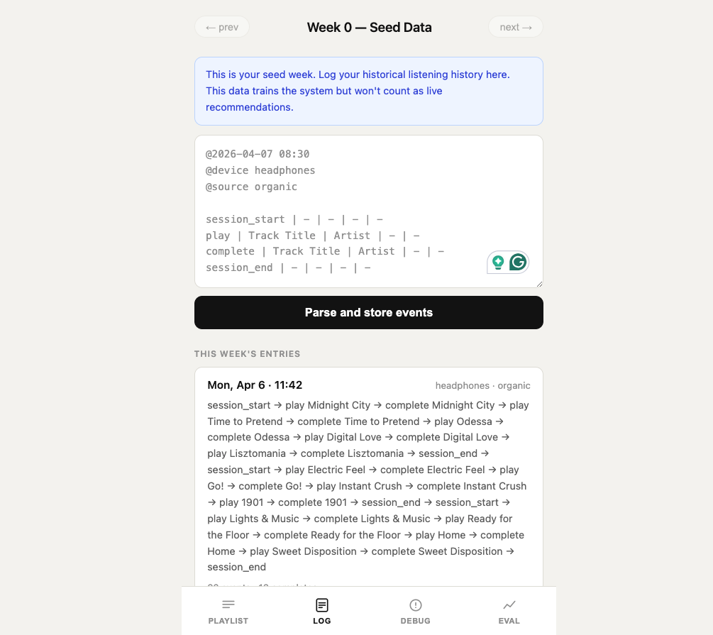
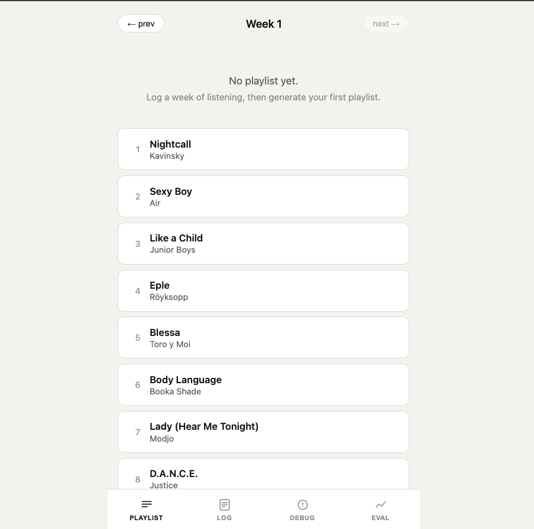
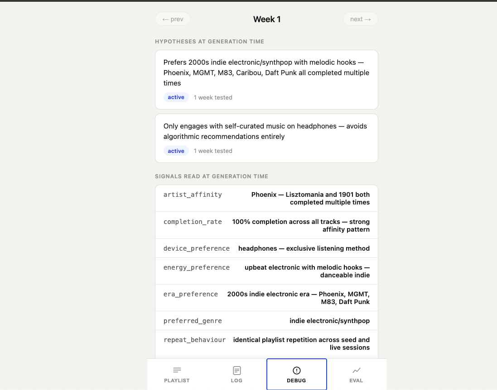
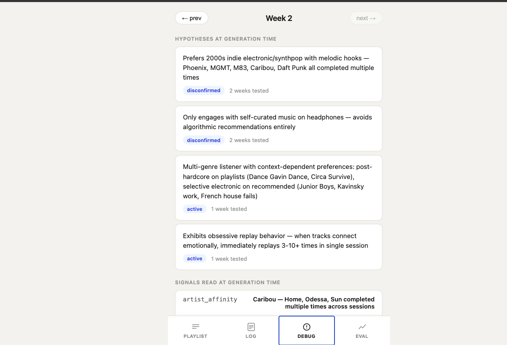
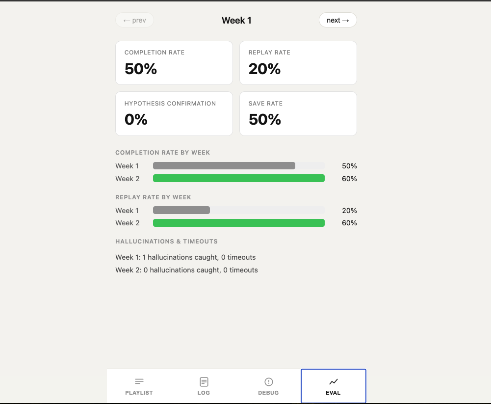

A longitudinal RAG that builds a running model of your music taste,
week over week, using behavioral signals instead of manual inputs.
LIVE·shipped: Apr 2026·platform: web
01
LEVEL 1 START
After shipping the Roast Bot, I was figuring out what to build next. Claude pushed back: stop building tools that wrap AI and build something that is the AI. Not a chatbot with a clever prompt. A system that learns about a specific person over time, updates its own assumptions, and gets measurably smarter each week. The kind of thing most people say AI can do but almost nobody actually builds.
That challenge came with a framework for thinking about where it sits relative to what most "AI products" actually are.
01
DUMB PROMPT
ask AI, get answer. no memory, no learning, no feedback loop
▶
02
LONGITUDINAL RAG
behavioral data feeds a model that persists and updates week over week
▶
03
CLOSED LOOP
system measures against targets and adjusts its own strategy when it fails
▶
04
AGENTIC
fully autonomous optimization. the system rewrites its own directives
Most products calling themselves "AI" live at stage one. The goal was to build stage two and understand what that actually requires in practice. Music was the right domain for that, since I work in the music industry and the problem was visible every day.
▸ HOW RECOMMENDATIONS WORK TODAY
Every major music app runs a version of the same approach. Either collaborative filtering ("users like you are listening to this") or a dumb prompt that asks an AI what fits a genre label. Both put you in a bucket. Neither builds a model of you.
The bucket knows what people in your cluster stream. It doesn't know that you skipped the third track at 9% completion, then went looking for that same artist three days later on your own. It doesn't know that you replay certain tracks eleven times in a row at midnight on headphones and never touch them again the next morning. It doesn't update when it's wrong about you.
~70%
OF STREAMS ARE ALGORITHM-DRIVEN
on major platforms, leaving little room for genuine discovery
10x
MORE SIGNAL IN A SKIP THAN A COMPLETE
a skip at 9% tells you more than a passive background completion
0
PLATFORMS THAT MODEL WHY YOU REPLAYED
repeat behavior is the clearest taste signal and nobody tracks it
POPULATION MODELS
Collaborative filtering finds people like you. It doesn't model you. Your taste gets averaged into a cluster, not understood as an individual.
NO LONGITUDINAL MEMORY
Each week's playlist is generated fresh. The system doesn't know that you rejected last week's picks but loved the post-hardcore track buried at position 9.
GENRE AS THE UNIT
Genre labels are the wrong abstraction. A listener who loves Caribou and Dance Gavin Dance doesn't share a genre. They share a production relationship to complexity and texture.
CONTEXT BLINDNESS
Platforms don't model listening context. The same person listens differently at midnight on headphones versus a weekend afternoon on a speaker. Same taste, different formula.
"You can't always put words to why a track hit. Wavelength doesn't need you to. It tracks the behavioral patterns — what you played, skipped, replayed, and came back to on your own — and builds its model from those."
The model doesn't learn from amounts of data. It learns from contrasts. You always listen to this type of track at 11pm. You complete these artists organically but skip them when they're recommended. You replayed that track nine times last Tuesday and haven't touched it since. Those contrasts are the signal. Genre labels are not.
02
BOSS FIGHT
I was building a longitudinal RAG system (retrieval-augmented generation: the AI reads your actual behavioral data at generation time instead of relying on training knowledge alone). The question wasn't what to build. It was what that actually requires to work: a behavioral data layer that captures more than completions, a hypothesis layer that persists and updates across weeks, and an evaluation layer that makes it possible to tell if week 3 is actually better than week 1.
Longitudinal means that data accumulates across weeks, not just sessions. Each generation reads everything that came before it and updates a standing model of who you are as a listener.
✗ BEFORE
Recommendation engines that generate fresh picks each week with no memory of what was rejected, no model of why things worked, and no way to tell if week 3 is actually better than week 1.
✓ AFTER
A longitudinal RAG pipeline that extracts behavioral signals, updates a hypothesis set that persists and refines across weeks, verifies every track against an external music database, and measures performance per generated playlist.
▸ THE BUILD
The first constraint was practical: no music catalog, no player. Building a streaming player was out of scope. The goal was the recommendation engine. So the first thing built was a way to simulate listening behavior without one.
▸ THE INTERFACE

MAIN PAGE
playlist view, week navigation, generate button. the entry point to the whole system.
The solution was a parser system. A structured plain text format was defined with 25 event types covering plays, skips, completes, replays, likes, and session context. A listening week could be authored as a text document and ingested through the log page. The parser validates every line, assigns session references by slot number, and writes to the database. No player needed.
▸ THE PARSER

SESSION INPUT
structured text format with 25 event types. timestamps, device, source, and events per line.

PARSED AND CONFIRMED
session validated, events counted, errors flagged. confirm to write to database.
With behavioral data ingested, the generation pipeline could run. Seven stages, one button. Extract reads all player events and produces behavioral signals. Hypotheses takes those signals and updates the standing model. Constraints builds the exclusion lists. Select makes two Claude calls: one to nominate 20 artists, one curator call to pick the single best track per artist. Verify checks every candidate against MusicBrainz. Sequence arranges the final 10 as an emotional arc. Snapshot writes the closing week metrics.

GENERATED PLAYLIST
10 tracks, position, curator reasoning per track. week navigation across all generated playlists.
The curator call is where the product thinking lives. Rather than picking the most popular track by an artist, the system asks: given that this listener replays tracks with a slow build and a hard payoff, given they listen on headphones late at night, given they skipped the obvious single, which specific track by this artist actually fits? Claude is briefed with the full behavioral profile and held accountable for the pick.
The hypothesis layer is the core of what makes this different from a dumb prompt. Before any generation, the system updates a set of falsifiable claims about the listener: "prefers post-hardcore in focused late-night sessions." Each claim has a status (active, confirmed, disconfirmed, or refined) and gets tested against what the listener actually did the following week. Eight structured directives determine how those updates fire, in what order, and when evidence overrides assumption. The directives are the architecture: they determine what gets prioritized, what gets ignored, and what constitutes a contradiction. Getting them wrong shows up as subtle drift, weeks later, in the wrong direction.
▸ THE DEBUG MODE

WEEK 1 DEBUG
extracted signals, hypothesis state at generation time, candidates before sequencing.

WEEK 3 EVOLUTION
same hypotheses now confirmed, refined, or disconfirmed. the model has updated its beliefs.
The analytics page closed the loop. Completion rate, replay rate, save rate, and hypothesis confirmation rate per generated week. If week 3 is actually better than week 1, these numbers show it.

EVAL PAGE
week-over-week metrics with trend deltas. the model's self-assessment made visible.
⚠ GOTCHA · THE SELECT CALL WAS DOING TWO JOBS
The first build used a single Claude call to generate 20 candidate tracks, artist and track title in one shot. The result was correct artists with hallucinated track titles for niche acts. Dance Gavin Dance appeared with track names that don't exist. Propaganda appeared with fabricated titles. The fix was splitting the call in two: Call 1a nominates artists, Call 1b is a separate curator call that picks the specific track per artist from its own musical knowledge, held accountable for the pick. Hallucinations dropped by over 75%.
⚠ GOTCHA · RECOMMENDED AFFINITY VS ARTIST SELECTION
When a track from the generated playlist gets replayed, that's a curatorial win. The first build fed those signals back into the artist selection call. The problem showed up in later weeks: signals showing the model working in indie electronic kept nominating more indie electronic artists, while post-hardcore and hip hop signals were growing stronger in organic sessions and never breaking through into the playlist. The fix was separating the concerns. Recommended affinity only informs which track to pick for an already-nominated artist. Artist nomination is driven by organic behavior and skip signals only.
✓ WIN · HYPOTHESIS CONFIRMATION RATE SHIPPED
The eval page tracks hypothesis confirmation rate alongside completion, replay, and save rate. When the rate trends up, the model's assumptions about the listener are getting more accurate. When it drops, the model got something wrong and the directives correct it in the next generation. A recommendation engine that measures whether its beliefs about you are improving is a different product than one that just keeps predicting.
Claude analysis Claude generation External API DB write Data / blocklist
▸ STEP-BY-STEP WALKTHROUGH
End-to-end from player events to a verified, sequenced playlist.
1
USER LOGS A WEEK OF LISTENING
Player events are submitted through the log page using a structured plain text format. Each session block has a timestamp, device, and source. The parser validates all 25 event types and assigns session_ref by slot number, not date.
Claude reads the full event log including seed and live sessions. Output is 5-15 behavioral signals. Skip signals name specific artists and tracks. Non-English affinity and era signals are protected and cannot be dropped when the list is trimmed.
Eight directives fire in order before any update. Skip signals override completion signals. Organic behavior confirms; recommended behavior tests. A genre hypothesis can only be disconfirmed if the listener rejects it in organic sessions, not just on recommended tracks. Multi-genre listeners get a meta-hypothesis instead of competing per-genre claims.
confirmeddisconfirmedrefinedmeta-hypothesis
4
SELECT MAKES TWO CLAUDE CALLS
Call 1a nominates 20 artists using strict behavioral directives. Recommended affinity signals are excluded here to prevent the model from doubling down on what already worked and ignoring underserved organic preferences. Call 1b is the curator: given the 20 artists and the listener's full behavioral profile, it picks the single best track per artist. No era bias. No popularity defaults.
skip signals firstorganic over recommendedera and language both requiredmax 2 per artist
5
VERIFY CHECKS EVERY CANDIDATE AGAINST MUSICBRAINZ
Each of the 20 candidates is checked against the MusicBrainz recordings API. Score threshold is 80. 1100ms rate limit between calls. If a track fails, getAlternativeTrack() calls Claude for a different known track by the same artist and retries once before dropping the artist entirely. All failures are logged to hallucination_log.
score ≥80 to passcached in tracks tableretry helper on failpipeline fails if verified < 10
6
SEQUENCE BUILDS THE EMOTIONAL ARC
Claude takes the verified pool (typically 16-20 tracks) and selects and orders the final 10 as a playlist arc. ISO phase principle: the opening matches the listener's current energy, then moves them. Skipped artists from recommended sessions go to positions 6-10. Max two tracks per artist.
DJ logicISO phaseskips to positions 6-10
7
SNAPSHOT WRITES CLOSING WEEK METRICS
After hypotheses update and before sequencing, snapshot.ts writes the closing week eval metrics to pipeline_snapshots. Slot-scoped logic: session_ref week-N matches slot N recommendations, not a date window. The eval page reads directly from snapshots.
The AI behavior in Wavelength isn't in a single model or a single prompt. It lives across seven TypeScript files, each responsible for one stage of the generation. These are the documents the system reads, writes, and updates to know who you are as a listener.
extract.ts
Reads all player events and asks Claude to extract 5-15 behavioral signals. Skip signals name specific artists and tracks. Non-English affinity and era affinity are protected signal types; they can never be dropped when the list is trimmed. This file determines what the system notices about you.
hypotheses.ts
Takes the extracted signals and updates the standing model of the listener. Eight structured directives determine how updates fire: what counts as a contradiction, when to disconfirm versus refine, how multi-genre listeners get represented. This file determines what the system believes about you and how willing it is to change its mind.
select.ts
Two Claude calls. The first nominates 20 artists using a strict behavioral hierarchy: skip signals first, organic sessions over recommended, language and era both required for non-English picks. The second is the curator call: given the 20 artists and the listener's full profile, it picks the single best track per artist with no era bias and no popularity defaults. This file determines what you hear.
verify.ts
Checks every candidate against the MusicBrainz public API. Score threshold of 80 to pass. When a title fails, a helper calls Claude for a different track by the same artist that it's certain about, then retries once before dropping the artist. All failures are logged with the exact strings that failed. This file keeps the system honest.
sequence.ts
Takes the verified pool (typically 16-20 tracks) and sequences the final 10 as an emotional arc. ISO phase principle: the opening matches the listener's current energy, then moves them. Skipped artists from recommended sessions go to positions 6-10. Max two tracks per artist. This file determines the listening experience.
snapshot.ts
Written after hypotheses update and before sequencing. Stores the closing week eval metrics: completion rate, replay rate, save rate, hypothesis confirmation rate. Uses slot-scoped logic, no date arithmetic. The eval page reads directly from snapshots. This file measures whether any of it is working.
every behavioral event with source, device, session_ref, is_recommended flag, completion_pct
recommendations
generated tracks per week with position, reasoning, iso_phase, week_of
user_signals
extracted behavioral signals per session_ref with confidence level and source
user_hypotheses
longitudinal taste hypotheses with status, weeks_tested, evidence JSON array
pipeline_snapshots
eval metrics per slot: completion, replay, save, hypothesis confirmation, hallucinations
tracks
MusicBrainz verification cache with musicbrainz_id and verified_at
hallucination_log
failed verification attempts with call_stage and the exact strings that failed
04
XP GAINED
▸ AI POWER-UPS
building with ai
HITTING THE TOKEN CEILING
Wavelength was the project where I hit the upper limit of what Claude Pro could handle. The pipeline is context-heavy: signals, hypotheses, blocklists, full behavioral history. Running generation cycles across multiple test users pushed token usage past the daily limit. That's when the upgrade to Claude MAX happened. Productive constraint: when you start hitting token limits on a personal project, it usually means the system is doing something real.
PROMPT DIRECTIVES ARE ARCHITECTURE
The hypothesis prompt has eight directives that run in a fixed order before any update fires. These aren't instructions: they're control flow. A directive that says "skip signals override completion signals" is doing the same job as an if/else in code. When you get it wrong in a prompt, the failure mode is subtle: the model hedges when it should commit, and the playlist drifts in the wrong direction for weeks before you notice.
TWO-CALL SPLIT FOR SELECTION
Splitting candidate generation into two calls (one for artist nomination, one for track curation) produced measurably better playlists than a single call doing both jobs. The curator call works because Claude has genuine track-level musical knowledge. It knows which Propaganda track fits a late-night headphone listener who replays slow builds. It just needs to be asked to use that knowledge explicitly against the listener's profile, not asked to do both jobs simultaneously.
HARDCODED EXAMPLES BIAS THE MODEL
Specific artist names and genres in system prompts create implicit preferences that leak across all users. A directive using a real artist name bakes in one user's data into a universal prompt. The fix was replacing all concrete examples with behavioral descriptions. Rules become: same language and same era, both required. Same source context, required. No named artists or tracks in prompts that serve every user of the system.
▸ PRODUCT SPECIAL MOVES
product thinking
THE HYPOTHESIS IS THE PRODUCT
The playlist is the output, but the hypothesis set is the actual product. A system that generates a playlist and forgets it is a one-shot tool. A system that maintains a standing model of the listener, confirms or disconfirms its own assumptions, and gets provably more accurate week over week is a different category. The eval metrics exist to make that distinction visible and measurable.
ORGANIC LISTENING IS GROUND TRUTH
What someone chooses to listen to when nothing is recommending anything to them is a different quality of signal than what they complete on a generated playlist. A listener who deep-dives eleven tracks at midnight on headphones, unprompted, is telling you something completion data cannot. The system weights organic and self-directed sessions as primary evidence, recommended sessions as hypothesis tests.
THE SYSTEM LEARNS FROM CONTRASTS
The model doesn't need large amounts of data. It needs meaningful contrasts in a small dataset. You always listen to this type of track at 11pm. You complete these artists organically but skip them when recommended. You replayed that track nine times last Tuesday and haven't touched it since. Each contrast is a signal that a population model can never capture. It requires knowing your specific sequence of decisions, not the aggregate behavior of people who stream similar music.
▸ DEV SECRETS DISCOVERED
development learnings
APIS TIME OUT
Any external API call needs a timeout strategy and a failure path, not just a happy path. The MusicBrainz verification loop runs 20 calls per generation at 1100ms between each. A single slow response without a ceiling could stall the entire pipeline. The fix was wrapping every call in an AbortController with a 5-second limit, routing timeouts to the same hallucination log used for failed matches, and continuing rather than blocking. The pipeline proceeds, the failure is recorded, no single API response can take down the rest.
SCOPE BY SLOT, NOT BY DATE
Scoping data queries by date windows creates a hidden dependency on real-time consistency between when sessions are logged and when they happened. The backfill that flags is_recommended on player events originally used an 8-day date window. It broke whenever test sessions used real past dates while recommendations had synthetic future dates. Scoping by slot number instead: week-0 maps to slot 0's week_of via OFFSET on the recommendations table. That removed all date arithmetic and the hidden dependency with it.
HALLUCINATION IS A DATA PROBLEM
LLMs confabulate track titles for niche artists because they have incomplete training data for them, not because they're failing at reasoning. The right fix wasn't better prompting for caution. It was a verification layer against an external music database plus a retry mechanism: when a title fails verification, ask the model for a different track by the same artist that it's certain about, then retry once. External ground truth plus a structured fallback is more reliable than trying to make the model more careful.
▸ SIDE QUESTS
future iterations
CLOSED LOOP WITH KPI TARGETS
Wavelength today is open-loop: it observes and adapts but has no target it's optimizing toward. The next stage is closed-loop: if completion rate drops below 80%, the pipeline injects a directive into the next generation: prioritize tracks that establish their character before the skip threshold. The model knows when it's failing and corrects toward a goal, not just toward more of what it observed.
TRACK ATTRIBUTE LAYER
The curator call picks tracks from Claude's musical knowledge, which is deep but uneven for niche artists. The gap is matching the listener's behavioral formula to track-level sonic properties (tempo, energy, danceability) because no free API provides that at scale. A local attribute cache built from already-verified tracks, supplemented by Last.fm tags, would close the gap between curator's best guess and data-driven track match.
WHEN IS THIS WORTH BUILDING
A longitudinal RAG system has real costs: initial development, ongoing infra, AI API calls, and the maintenance overhead of a pipeline that fails in subtle ways. It's only worth it when the product has a recommendation loop that directly drives retention or monetization, and when the user base engages with that loop repeatedly over time.
A useful framework is to think through it like RFM applied to recommendation behavior. Recency: does the user return to the recommendation surface frequently enough that a better playlist next week actually matters? Frequency: are there enough behavioral events per session to extract meaningful signals, or is the data too sparse? Monetary: is there a clear line between recommendation quality and a conversion or retention outcome that pays for the system?
If all three are true: users return often, generate rich behavioral data, and their engagement with recommendations ties to a business outcome, a longitudinal closed-loop system has a strong ROI case. If only one or two are true, a well-designed dumb prompt or a simpler collaborative filter is almost certainly the better investment.
The stage beyond closed loop: a system that detects its own failures, rewrites its own directives, runs experiments across variants, and decides when to self-correct versus escalate. No fixed prompt. No fixed strategy. The agent owns the full optimization loop. Wavelength's modular pipeline is already structured for this: each stage is a function. The agentic layer would be the orchestrator that decides how those functions get configured based on observed outcomes.